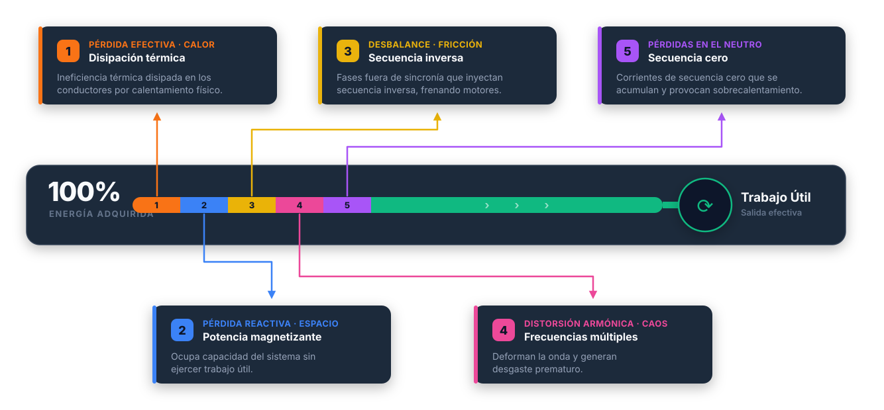
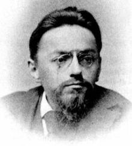
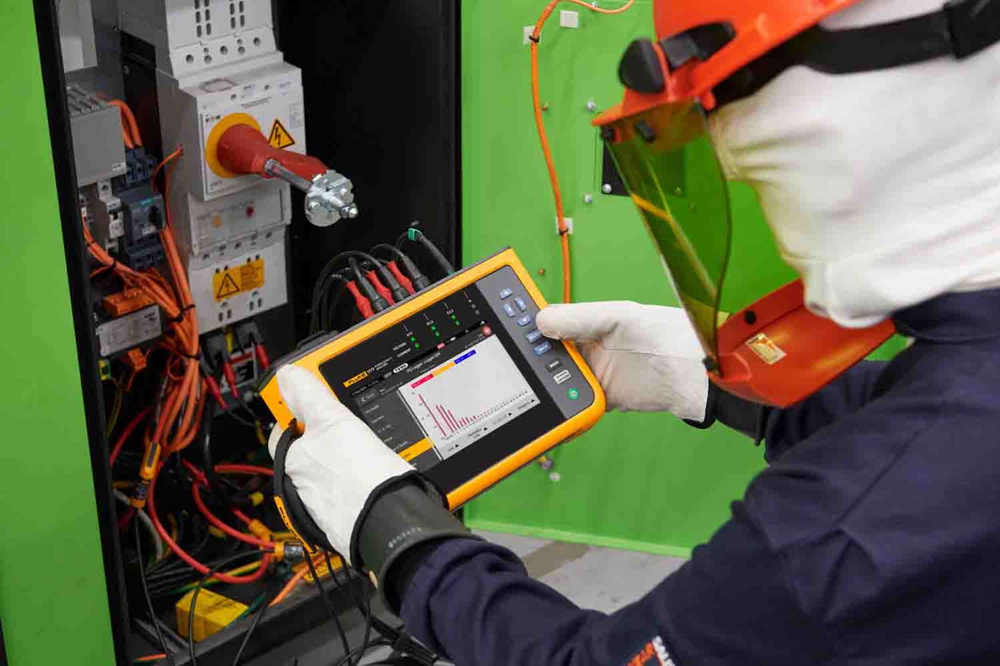
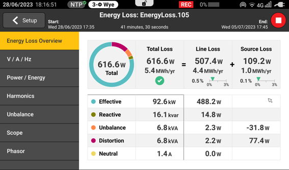

Vol. 01 · Nº 04Edición técnica · Julio 2026Lectura · 12 min
Método de Potencia Unificada (UPM)
Medir la potencia, modelar las pérdidas y hacer explícitos los supuestos
El Método de Potencia Unificada (UPM) organiza magnitudes de potencia y calidad de energía en un diagnóstico aplicado. Su valor no está en convertir toda magnitud no activa en una pérdida física, sino en separar, dentro de una frontera de medición definida, la disipación resistiva, la utilización de capacidad y las contribuciones asociadas con desequilibrio y distorsión; después, esos resultados pueden anualizarse con una tarifa y un perfil de carga documentados.
Por · Eduardo Jara G.Tema · Medición y diagnóstico de calidad de energía
Figura 01 · Flujo de potencia y energía en la frontera de medida
Qué se mide y qué se modela entre la fuente y la carga

El UPM parte de una frontera de medición, una ventana temporal y un modelo de red declarados. La energía activa registrada puede conciliarse con las categorías calculadas; las categorías no deben interpretarse automáticamente como cinco pérdidas físicas independientes ni como una atribución contractual de responsabilidad.
§ 01 Un siglo de teoría de potencias

Charles P. Steinmetz
La formulación clásica de potencia activa y reactiva es rigurosa en el dominio sinusoidal. La medición moderna debe declarar cuándo se extiende el análisis a formas de onda distorsionadas y a sistemas desequilibrados.
La teoría de potencia en régimen sinusoidal sigue siendo exacta dentro de sus hipótesis: para una tensión y una corriente sinusoidales de frecuencia fundamental, la potencia activa se obtiene como el valor medio de v(t)i(t) y, en el caso monofásico, puede escribirse como P = V I cos φ. La potencia reactiva asociada al fundamental, usando magnitudes RMS de la componente fundamental, Q1 = V1,rms I1,rms sin φ1, caracteriza el intercambio de energía almacenada en campos eléctricos y magnéticos. Q no es, por sí misma, una potencia disipada: la disipación real depende de elementos resistivos, pérdidas del material y otros mecanismos físicos del sistema.
En una instalación actual, las tensiones y corrientes pueden contener armónicos, interarmónicos, transitorios, componentes de secuencia y variaciones de magnitud. Un variador de velocidad, una fuente conmutada o un rectificador puede presentar una corriente no sinusoidal aun cuando la tensión de alimentación sea aproximadamente sinusoidal. En esas condiciones, el producto de valores eficaces Vrms Irms puede usarse como magnitud de potencia aparente, pero no basta para describir por separado el intercambio fundamental, el contenido armónico, el factor de potencia total y la utilización de conductores y convertidores.
La descomposición en componentes simétricas representa un conjunto trifásico mediante componentes de secuencia positiva, negativa y cero. La secuencia negativa puede producir efectos térmicos y de par inverso en máquinas, pero su presencia no equivale automáticamente a una cantidad única de energía “perdida”. La secuencia cero puede circular por el neutro o por caminos de retorno definidos por la topología y la puesta a tierra; su efecto térmico depende de la corriente y de la impedancia efectivamente recorrida.
El problema no es que la teoría sinusoidal sea obsoleta, sino que sus magnitudes deben complementarse con definiciones adecuadas para formas de onda no sinusoidales y sistemas desequilibrados. IEEE Std 1459-2010 establece definiciones comunes para cuantificar cantidades de potencia y energía eléctrica en circuitos monofásicos y trifásicos bajo condiciones sinusoidales, no sinusoidales, equilibradas y desequilibradas. La norma aporta definiciones comunes para interpretar cantidades de potencia y energía; no determina por sí sola qué equipo causó una perturbación, quién debe pagarla ni qué inversión tendrá retorno.
§ 02 La brecha entre IEEE 1459 y la planta
IEEE Std 1459-2010 debe leerse con precisión. Su título y alcance se refieren a definiciones para la medición de cantidades de potencia eléctrica en circuitos monofásicos y trifásicos, bajo condiciones sinusoidales, no sinusoidales, equilibradas y desequilibradas. La norma proporciona definiciones comunes para interpretar resultados de instrumentación y evitar que una sola cifra de factor de potencia o S = Vrms Irms oculte la naturaleza de la forma de onda. La comparabilidad efectiva exige además verificar la implementación, la clase, el ancho de banda, los transductores, la sincronización y el método de agregación.
“IEEE 1459-2010 define cantidades y relaciones de medición; el UPM/ELC añade una capa de organización aplicada y estimación económica. Ninguno de los dos, por sí solo, prueba causalidad ni fija una obligación tarifaria.”
Síntesis editorial de esta propuesta; no es una cita textual de IEEE ni de Fluke.
Ese alcance tiene límites relevantes para una planta. IEEE 1459-2010 no es una norma de causalidad: una medición en un punto no identifica por sí misma qué carga originó una corriente armónica o un desequilibrio. Tampoco es una norma de liquidación tarifaria, una regla de reparto de pérdidas entre partes, una metodología contractual de “culpa” o una evaluación económica completa. Para esos usos se requieren una frontera de medición, registros sincronizados, información de red, condiciones de operación, criterios de calidad aplicables y, cuando corresponda, reglas del contrato o del código de red.
El UPM/ELC puede ocupar la zona intermedia entre la definición metrológica y la decisión de mantenimiento: toma variables medidas y parámetros de instalación, las organiza en categorías de análisis y calcula equivalentes energéticos o monetarios conforme a un modelo. La afirmación técnicamente defendible es que facilita una desagregación aplicada, no que reemplaza el estudio de flujo de carga, cortocircuito, armónicos, coordinación de protecciones o resonancia.
En la documentación pública consultada de IEEE, IEEE 1459-2010 figura actualmente como estándar inactivo-reservado y como supersedido por IEEE 1459-2025. Este dato editorial no invalida su uso como referencia histórica o como base de un procedimiento que lo cite expresamente, pero exige indicar la edición empleada y verificar la edición vigente cuando el resultado se utilice para especificación, conformidad o contrato.
Conciliación
Conciliación de energía activa — verificable solo dentro de la incertidumbre y la frontera declaradas
5
Categorías usadas por la presentación UPM/ELC; no cinco Joule independientes
3
Vías editoriales de parametrización de la resistencia
kWh · tarifa
Salida económica derivada de energía, tarifa, periodo y supuestos
§ 03 Las cinco categorías del UPM
Las cinco categorías deben leerse como una taxonomía de diagnóstico, no como una partición termodinámica única. Para hacerla reproducible, el informe debe declarar: sistema monofásico o trifásico, conexión y neutro, frecuencia nominal, canales medidos, método de agregación temporal, espectro considerado, frontera de medición, resistencia o impedancia de referencia, perfil de carga y tarifa.
Para una ventana de medida T, la energía activa registrada en una frontera puede expresarse como EP = ∫₀ᵀ p(t) dt, con p(t) = Σ vk(t)ik(t) según la conexión y la convención de signos.
Las categorías de UPM/ELC pueden expresarse en unidades de potencia equivalente y luego integrarse a kWh. No deben sumarse ni compararse como si fueran magnitudes independientes sin conocer la convención exacta del algoritmo, porque una misma corriente puede contribuir simultáneamente a calentamiento resistivo, demanda aparente, distorsión y corriente de neutro.
01
Pérdida efectiva Disipación resistiva de línea · modelo I²R
En un conductor con resistencia efectiva R y corriente instantánea i(t), la pérdida Joule media se aproxima por PJ = ⟨i²(t)⟩R. Este término es físico siempre que R represente la resistencia efectiva de la trayectoria, a la temperatura y frecuencia/modelo considerados, y que la frontera esté bien definida.
Mitigación · revisar sección, longitud, temperatura, conexiones y paralelismos
02
Componente reactiva Intercambio de energía almacenada · utilización de capacidad
En régimen sinusoidal, Q representa el intercambio neto asociado a elementos inductivos y capacitivos. No es una pérdida Joule directa, aunque una corriente reactiva puede aumentar indirectamente I²R en una resistencia de red no nula.
Mitigación · evaluar compensación y estudiar resonancias, armónicos y transitorios
03
Desequilibrio Secuencias positiva, negativa y cero · sistema trifásico
La secuencia negativa puede producir calentamiento adicional y par inverso en motores; una componente de secuencia cero puede circular por el neutro o por otros caminos según la conexión. Un desbalance medido no prueba que la carga local sea la única causa.
Mitigación · balancear cargas y revisar impedancias, conexiones, tensión y motores
04
Distorsión Corrientes y tensiones armónicas · espectro declarado
El THD es un indicador espectral, no una potencia ni una energía. Una corriente armónica puede aumentar el RMS, las pérdidas en conductores y el calentamiento de transformadores, pero la magnitud no se obtiene multiplicando THD por una tarifa.
Mitigación · seleccionar filtros y reactancias tras estudiar espectro e impedancia
05
Corriente de neutro Retorno y secuencia cero · impedancia de trayectoria
En un sistema trifásico de cuatro hilos, la corriente de neutro puede incluir componentes de secuencia cero y armónicos triplén. Puede generar pérdida resistiva PN = IN,rms² RN cuando el conductor y sus conexiones presentan resistencia; la topología y el camino de retorno importan.
Mitigación · medir espectro y temperatura antes de modificar conductores o protecciones
§ 04 Configurar la resistencia de línea

Figura 02Caracterización en campo: la conexión del analizador, la configuración de la topología y la calidad de las señales determinan la utilidad del diagnóstico. La resistencia de línea debe referirse a una trayectoria y una temperatura concretas; no es un parámetro universal del tablero.
La resistencia de línea es un parámetro de modelo para estimar la disipación asociada con una trayectoria definida. Antes de introducirla, el ingeniero debe documentar el unifilar, el punto de medida, la longitud y sección de los conductores, conexiones, temperatura, conductores en paralelo, transformadores incluidos o excluidos y si el modelo usa resistencia de fase a fase, de fase a neutro o una resistencia equivalente por fase.
Si se usa PJ ≈ I²R, la corriente debe corresponder a la misma trayectoria a la que se asigna R. En régimen no sinusoidal, una sola resistencia a frecuencia fundamental puede ser insuficiente; el informe debe indicar si el cálculo incorpora corrección térmica, utiliza un modelo equivalente del instrumento o suma términos como Σh Ih,rms² Rh.
#
Vía de ingreso
Descripción y trazabilidad
01
Estimación a partir de protección
El calibre del disyuntor no determina por sí solo la resistencia. Puede servir como aproximación preliminar, pero la incertidumbre incluye longitud, sección, material, conexiones, temperatura y trayectoria real. No usar como valor contractual sin validación.
02
Cálculo por conductor
Derivar el valor a partir de material, longitud, sección, temperatura y, cuando sea necesario, correcciones de frecuencia y configuración. Conservar esquema, hipótesis y fichas del conductor.
03
Medición directa o ensayo validado
Un miliohmímetro puede caracterizar conexiones y tramos accesibles, con el circuito seguro y un método compatible con la frontera del cálculo. La medición directa no corrige por sí sola temperatura ni todos los efectos de frecuencia.
Source loss y line loss son nombres de salida del algoritmo/configuración de ELC, no categorías normativas de IEEE 1459 ni mediciones directas de cada tramo; su separación también es una decisión de frontera. Una medida aguas abajo de la acometida no observa directamente todas las pérdidas de la red de la distribuidora; comparar puntos requiere sincronización, topología y condiciones de carga comparables. La asignación del algoritmo no constituye una prueba de causalidad ni determina quién es responsable frente a un contrato.
§ 05 Traducir magnitudes físicas en un equivalente económico

Figura 03La vista de pérdidas organiza resultados calculados por el algoritmo/configuración de ELC para una frontera y un periodo concretos. Line loss y source loss deben leerse como asignaciones del modelo configurado; no equivalen automáticamente a pérdidas medidas en cada tramo físico ni a una liquidación tarifaria.
La monetización es una segunda capa del análisis. Primero se obtiene una energía o potencia equivalente conforme a la medición y al modelo; después se aplica una tarifa documentada. Para un término j, una anualización simple puede escribirse como Costo_anual,j = E_equivalente,j × c_E, si c_E es una tarifa energética constante en moneda/kWh. Cuando la tarifa varía por periodo, el cálculo debe hacerse por intervalos y declarar también los cargos de demanda si existen.
La anualización exige especificar ventana de medida, fecha y duración, perfil de carga, extrapolación, disponibilidad de datos, tarifa, moneda, periodo de facturación y frontera de medición. Si se midieron 24 horas durante un día de producción normal, no es defendible multiplicar sin más por 365 cuando existen turnos, fines de semana, estacionalidad o paradas. Una práctica trazable es construir escenarios base, bajo y alto.
El resultado debe llamarse “equivalente económico estimado” o “coste anualizado bajo los supuestos indicados”. No es correcto afirmar que el instrumento muestra cuántos dólares se desperdician exclusivamente por culpa de los armónicos si no se ha establecido causalidad y si la tarifa, la carga y la frontera no están documentadas. El THD tampoco es una partida monetaria.
Bloque mínimo de supuestos: punto y frontera; fecha, duración y agregación; estado de cargas y compensación; clase, sensores, relaciones y sincronización; edición normativa y bandas espectrales; tarifa y vigencia; factor de extrapolación e incertidumbre.
§ 06 ROI, ISO 50001 y decisiones
Un diagnóstico de UPM/ELC puede aportar una entrada cuantitativa para evaluar medidas de mitigación, pero no produce por sí solo un ROI. El ahorro neto debe comparar una línea base y un escenario posterior con la misma frontera y condiciones de carga, e incluir inversión, instalación, mantenimiento, disponibilidad, vida útil, coste de capital, impacto en producción y posibles efectos secundarios. Un cálculo básico puede expresarse como ROI_simple = (ahorro_anual − costes_anuales) / inversión, siempre que cada término esté definido.
La selección de filtros, compensación reactiva, redistribución de cargas o refuerzo de conductores exige revisar resonancias, variación de impedancia de red, corrientes de cortocircuito, coordinación de protecciones, ampacidad, temperatura, compatibilidad electromagnética y límites del código de red o del contrato. La intervención debe verificarse mediante una campaña posterior con condiciones de carga comparables.
ISO 50001 puede proporcionar un marco de gestión de la energía, pero el uso de UPM/ELC no es indispensable por definición para cumplir ISO 50001. La conformidad depende del sistema de gestión, alcance, revisión energética, indicadores, línea base, objetivos, datos y evidencias que exija la edición aplicable y el proceso de auditoría. UPM puede ser una herramienta complementaria si sus supuestos, datos y resultados son adecuados.
“Una cifra anualizada es útil para decidir solo cuando se puede reconstruir desde la medida, el modelo, el perfil de carga y la tarifa.”
Fuentes Referencias y límites de uso
Estas referencias sostienen el marco técnico del artículo. La edición aplicable de cada documento y las funciones disponibles del instrumento deben verificarse antes de usar el resultado para especificación, conformidad o contrato.
IEEE 1459-2010 — IEEE SA — Título, alcance resumido, estado del estándar y referencia a IEEE 1459-2025.
IEC 61000-4-30:2025 — IEC Webstore — Métodos de medición e interpretación de parámetros de calidad de energía; la edición 2025 contempla clases A y S. La clase y la edición aplicables deben confirmarse para el instrumento concreto.
Nota editorial: no se incluyen DOI, números de patente, cifras de ahorro ni datos de colaboración institucional no verificables. Este artículo es un prototipo editorial: no presupone que una edición normativa, modelo, firmware, mercado o función de documentación sea universal.